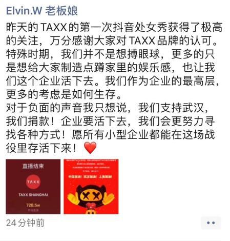

一千三百万张退票背后：曾有一万多人在客服电话中排队
原文链接 备份链接 *************▲*************疫情期间，人们不能移动，机票取消，使得国内航空公司不得不合并、取消多数航班。图为广州白云国际机场航站楼候机厅一角。（南方周末记者 冯飞/图） 全文共4406字，阅 …

“真的要宅疯了！”
这可能是疫情暴发之后，众多宅在家里的人内心中一致的想法。新型冠状病毒肺炎这只“黑天鹅”从武汉飞出来以后，迅速蔓延全国。
居家隔离、远程办公、大学生放假时间延长，这一系列的行为成为人们的共识。在这种背景下，线下娱乐基本暂停，诸多综艺节目、演唱会暂停，餐饮业也基本处于休业当中，人们活动的范围基本局限在家里，“宅”成了大家的一致选择。
但是，“宅”并不能阻止人们渴望娱乐的心情，线上娱乐开始成为人们新的关注点，云蹦迪就开始成为年轻人一种新的选择方向。

云蹦迪真的蹦得起来吗？
TAXX号称是国内最贵的夜店，传闻明星郑恺是其背后的老板之一。
在美团的大众点评上，作为有名的蹦迪场所，这家TAXX夜店有着4.87分的评分，网友对此呼声很高。这家夜店单天营收并不清楚，但有大众点评网友评论，开在上海巨鹿路上的TAXX，每天晚上路两边都是人流密集、豪车扎堆，停满各种超跑豪车，包括法拉利、兰博基尼、迈凯伦和劳斯莱斯等。从这点看来，作为国内的顶级夜店，每天的营收必然不低。
由于疫情，这家大型的线下娱乐场所也不得不关停。但是，在今年元宵节的当天，这家夜店采取了另外一种线上蹦迪的方式，也就是所谓的云蹦迪。
云蹦迪，顾名思义，就是将以往线下蹦迪转移到线上，直播DJ（打碟师）打碟，宅在家里的人通过不同的移动端设备进行互动。
那么，云蹦迪真的能吸引那些酷爱线下社交的人吗？
2月8日，TAXX官方微信发布消息，在元宵节当晚，这家夜店将在抖音进行线上直播，从晚上10点到下半夜2点，每一个小时有一位DJ主持。如今查看TAXX的这篇推送，也不过只有6000多次的阅读量。按照这种情况来推测的话，可能当天晚上的云蹦迪不见得会有比较好的效果。
然而，实际情况并不是这样。
在TAXX传出晚上要进行云蹦迪的消息后，越来越多的人开始参与这场云狂欢之中。当晚在活动开始之后，TAXX的直播就在抖音上获得了爆炸性的关注，诸多网友踊跃参与，纷纷打赏。根据TAXX的官方数据统计，这场持续4小时的云蹦迪，在整个直播期间，打赏总收入达728.5万音浪，同时持续霸榜抖音直播小时榜。
音浪是抖音目前的虚拟货币，按照抖音的兑换比例为1：10，换句话说，就是人民币1元钱相当于10个音浪，这样算下来，TAXX这场云蹦迪单单直播打赏收入便高达70余万元人民币。即使考虑到同抖音直播平台的分成，TAXX这场云蹦迪收入还是十分可观的，毕竟没了线下的费用。
图片来源：TAXX官方微信
另外，在直播之后，TAXX就宣布将元宵节当晚的直播收入全部捐给武汉，以转化为对武汉疫情的帮助，用于支持武汉新型冠状病毒肺炎的防疫工作，并且已经与有关的基金会取得了联系，还表示，捐助的具体细节和过程都会以公开透明的方式公示给大众。
值得注意的是，这条消息是在元宵节后的第二天推送的，阅读量高达5.1万次，远超前一天6000多次的阅读量。
TAXX的老板娘也发朋友圈表示，这次云蹦迪并不是为了博人眼球，而是在考虑如何让线下娱乐场所找到新的突破口。

图片来源：TAXX官方微信
但从TAXX这次云蹦迪的结果来看，对于大众来说，云蹦迪，这种虚拟的线上娱乐方式，真的存在巨大的潜藏市场。
不仅仅是上海的TAXX，著名夜店ONE THIRD也在抖音开设了云锐舞直播。开播时间不到10分钟，直播在线人数就已经破万，不到1小时，音浪值破100万。等到次日凌晨2点结束时，直播间累计在线人数已经超过121.3万人，音浪值最终达到了1931.6万，也就是近200万元人民币的打赏。
累计在线人数超百万人，这个客流量可能不是任何一家线下夜店一晚可以达到的程度。即使是一场声势浩大的演唱会，全场人数囊括在一起也不过几万人。
国内其他视频领域的巨头似乎也都嗅到了这当中潜藏的商机。2月4日草莓音乐节主办方摩登天空与B站联合发起“宅草莓不是音乐节”的直播，它每天直播6小时，单日在线最高49万人。
另外，与抖音齐名的另一个短视频平台快手，也在近日发起了“不如云蹦迪”，来自北京、青岛、长沙、苏州、成都、重庆等一二线城市的众多头部夜店和厂牌纷纷入驻快手，进行“云蹦迪”直播，自2月10日开始，每晚都有“云蹦迪”排期，在快手搜索“蹦迪”即可观看直播。其中，有相关直播开播不到半小时，圈粉30万人，同时在线人数超过10万人，总观众超过231人次，点赞达到了300多万次。
根据中国产业研究院数据显示，2018年，国内酒吧数量已经突破6万家，预计解决了近千万人的就业问题，行业市场规模达到451亿元。这也就意味着云蹦迪可能也有着如此庞大的潜在市场，甚至更大，因为互联网毕竟可以触达更多的人。
就目前来看，云蹦迪好像真的蹦起来了。
“云蹦迪”能蹦多久？
“云蹦迪这样的项目，其实之前就关注到了，但是感觉一般，都放下了。”有一级市场做投资相关的从业者和笔者这样表示。
不仅仅是云蹦迪，太多的“云娱乐”都在这段“宅空档”时期先后大火。
今年春节期间，手机游戏市场尤其火爆。根据第三方数据，春节期间《王者荣耀》及《和平精英》的日活跃用户数量峰值分别在1.2亿至1.5亿人及0.8亿至1.0亿人之间，均创下历史新高。《王者荣耀》在大年三十单日流水超20亿元人民币，这是目前世界上单款娱乐产品单日流水最高的纪录。
除此以外，线上棋牌游戏也在这段时间表现优异。根据七麦数据公开披露的数据进行统计，农历腊月三十至正月初六期间，排名上升最快的10款游戏中有7款是棋牌类游戏；排名上升最快的20款游戏中有14款棋牌类游戏。民生证券研报显示，线上棋牌类游戏下载量明显爆发，棋牌类游戏下载量峰值对比疫情发生前来看，都上升了200%以上。

那么这种云娱乐到底能不能持续下去呢？
1月29日，在港股市场鼠年首个交易日上，线上娱乐领域的股票大涨，在线棋牌游戏的联众上涨2.13%，经营儿童在线娱乐节目及在线游戏的百奥家庭互动上涨4.94%，香港电视大涨13.72%。
根据德璞资本的研究，线上娱乐领域的概念股虽然有短期炒作因素存在，但参照美股市场来看，随着互联网衍生出的包括影视、游戏、社交、工作、教育等多元服务渗透到生活的每一方面，相关产业也迎来了更大的发展契机。德邦基金的基金经理夏理曼认为，随着5G时代的到来，游戏、视频等应用的发展趋势几乎不会受疫情影响。
如果按照这个推测来看，即使在疫情过去以后，人们不再宅，线下蹦迪重启，但是云蹦迪这样的线上娱乐，基于已经形成一段时间的行为习惯，很可能也会仍然存在市场。
（编辑：黄玉璐 校对：颜京宁）


推荐阅读

点击大图 | 高情商！李佳琦复播求下“热搜”：电商直播悄然“复苏”

点击大图 |无人零售又“火”了

原文链接 备份链接 *************▲*************疫情期间，人们不能移动，机票取消，使得国内航空公司不得不合并、取消多数航班。图为广州白云国际机场航站楼候机厅一角。（南方周末记者 冯飞/图） 全文共4406字，阅 …
原文链接 备份链接 明明开学都推迟了 家长反而更忙乱了疫情之下，不少当爹妈的宅在家，陪娃过着漫长的寒假。 停课不停学，老师当主播，在家上网课，却让不少家长直呼撑不住。一边要在家办公，一边还要参与学校布置的任务，光是每天直播课的花式打卡， …
原文链接 备份链接 为什么这次在线教育又火了？ “到了2020年，老师和学生都不用去学校了，在家里就能上课”。这是2000年梦想杯作文大赛特等奖节选中的一句话，没想到在二十年后的今天却由于新冠肺炎疫情影响而变成了现实。 近年来在线教育被社 …
原文链接 备份链接 图片来源：视觉中国 记者：郑洁瑶 “ 疫情开始以来，KTV、网吧、洗浴中心等娱乐场所基本都被暂停营业，餐饮、酒店则门可罗雀。对于共享充电宝这类非常依赖人流量的行业来说，这几乎是致命打击。 ” 一场来势汹汹的疫情，让共享 …
佳佳，13岁，中度听损，双侧助听器，七年级 宁宁，15岁，极重度听损，双侧耳蜗，九年级 瑶瑶，16岁，重度听损，一侧助听器一侧耳蜗，高中一年级 小光，20岁，极重度听损，一侧助听器一侧耳蜗，本科二年级 小慧，23岁，极重度听损，一侧 …